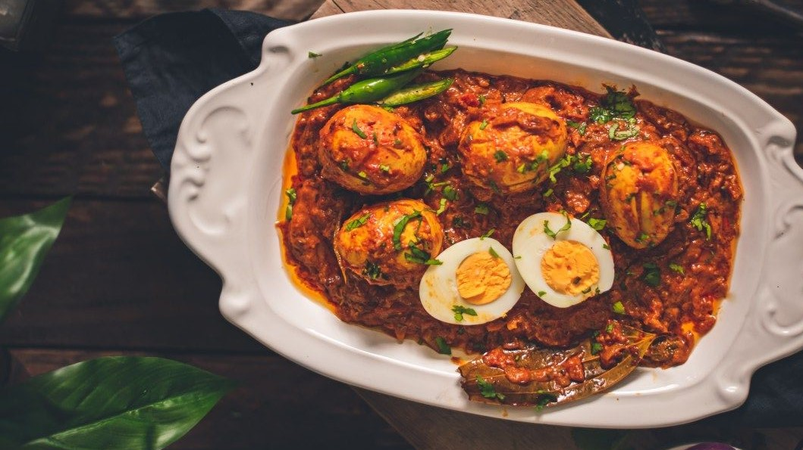
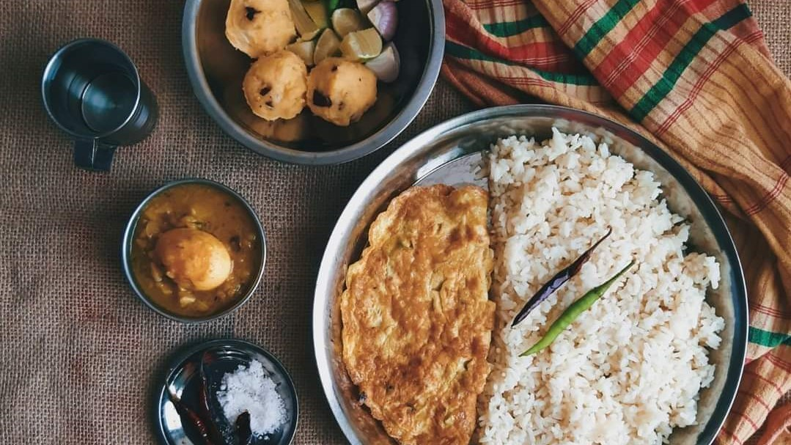

Bengali cuisine (Bengali: বাঙালি খাবার) is the culinary style of the Bengal region in the eastern part of the Indian subcontinent in Bangladesh and the Indian states of West Bengal, Tripura and Assam's Barak Valley. There is an emphasis on fish, vegetables, and lentils with rice as a staple.Many Bengali food traditions draw from social activities, such as adda, or the Mezban.Bengali cuisine is known for its varied use of flavours, as well as the spread of its confectioneries and desserts. It has the only traditionally developed multi-course tradition from the cuisine of the Indian subcontinent that is analogous in structure to the modern service à la russe style of French cuisine, with food served in courses rather than all at once.
Ingredients for Masala Fish Curry:
- Fish (Rohu, Katla, Asian Carp) - 500 gms
For marination:
- Turmeric powder- 1/4 tsp
- Red Chilli Powder- 1 tsp
- Salt- 3/4 tsp
For Masala Paste:
- Cumin seeds- 1 tsp
- Dried Red Chillies- 2
- Garlic- 10 cloves
- Green Chillies- 2-3 (cut into 2)
- Red Chilli Powder- 1.5 tsp
- Coriander Powder- 1.5 tsp
- Turmeric Powder- 1/4 tsp
Other Ingredients:
- Onion, grated- 2 medium (around 130 gms)
- Kasuri Methi (dried Fenugreek leaves)- 1 tsp
- Curry leaves- 15-20
- Tamarind, soaked in water- 4 tbsp juice
- Thick coconut milk- 4 tbsp
- Salt to taste- 1/2 tsp
- Coriander leaves for garnishing- 2 tbsp
- Oil - 3 tbsp + oil for pan frying the fish pieces
Preparation:
- Clean, wash and pat dry the fish pieces. Add the turmeric,
red chilli powder, salt and mix well. Set aside for 30
mins.
- To prepare the Masala paste, take a pan and dry roast the
red chillies and cumin seeds on low heat for 1 minute. Now add
the garlic cloves and continue roasting on low heat for
another 2 mins. Set aside to cool. Add them to blender/grinder
along with the green chillies. Coarse grind.
- Now add 3-4 tbsp of water and blend it into a smooth paste.
The masala paste should have thin consistency so you can add
more water to make into a thin consistency.
- To pan fry the marinated fish, add oil to a frying pan and
place the fish pieces side by side.
- Fry on medium heat for 2 mins and turn it on the other side.
Continue to fry on medium heat for 2 mins. Take these out on a
plate.
Process:
- Heat oil in a flat pan or kadai.
- Add the grated onions and fry on medium heat for 7-8 mins
till light brown in colour.
- Now add the masala paste and give a mix, add 1/2 tsp salt to
it and continue to fry on medium heat for 3 mins till water
dries up and oil separates.
- Add the dried fenugreek leaves (Kasuri Methi) and fry 1 min
on medium heat. Add the curry leaves and fry on low to medium
heat for 2 mins.
- Now add the tamarind juice, give a mix and then add 250 ml
water. Cook it on medium heat till it comes to a boil.
- Lower the heat and place the fried fish pieces side by side
and cover & cook on low heat for 5 mins.
- Remove lid and flip the fish pieces. Add the thick coconut
milk, give a mix.
- Cover & cook for another 10 mins on low heat till oil
separates.
- Garnish with the chopped coriander leaves, mix and simmer
for a minute.
- Serve with rice.
Ingredients for Bengali Fish Curry:
-1 whole pomfret, curry cut
-1.25 tsp turmeric powder
-¼ cup mustard oil
-2 medium onion, finely chopped
-2 medium tomato,finely chopped
-1 tsp ginger garlic paste
-1 tsp red chili powder
-1 tsp coriander powder
-1.50 cups water 1 tbsp coriander leaves,chopped
-salt as per taste
Process:
-In a mixing Bowl, Coat the curry cut Pomphret along with Salt
and 3/4 tsp Turmeric powder. Coat them nicely on both sides.
-In a pan, add in some mustard oil,shallow fry the Pomphret on
both sides. Shallow fry them until golden. Once cooked well,
remove the fish and keep it aside.
-In the same pan, add finely chopped Onions and saute them
until the Onion turns Golden Brown.
-Now add in 1/2 tsp Turmeric powder, Red Chilli Powder, and
Coriander Powder. Saute the masala along with the Onions for
2-3mins.
-Now add in finely chopped Tomatoes. Allow the tomatoes to
cook well. Cook them till it becomes a Paste.
-Add in Water and Salt. Keep the Masala on sim for 10 mins.
-After 10 mins, Top the gravy with the fried fish and mix them
well. Allow this to cook for another 5 mins.
-Bengali Fish Curry is now ready. Garnish it with Chopped
Coriander Leaves.
INGREDIENTS:
-600 g katla machh (Catla or Rohu fish)
-8 g salt
(for marination)
-3 g turmeric (for marination)
-80 g mustard oil
-10 g ghee
-4 pcs dried
red chillies
-4 pcs bay leaves
-4 pcs cardamom
-4 pcs cloves
-2 pcs cinnamon
-1 tsp cumin
seeds
-150 g onion (paste)
-100 g onions (sliced)
-20 g ginger
-30 g tomato
-50 g yoghurt
-6 g turmeric
-2 g red chilli powder
-6 g
kashmiri red chilli powder
-4 g cumin powder
-30 g
raisins
-27 g salt
-35 g sugar
-500 g hot
water
-½ tsp Bengali gorom moshla
-6 pcs green
chillies
METHOD:
-Wash and thoroughly dry the fish. There should not be
any excess moisture on the surface of the fish.
-Sprinkle 8 grams of salt and 3 grams of turmeric powder
and toss to coat. Set this aside to marinate (in the
refrigerator if it is a hot day).
-Slice 100 grams of
cleaned onions along the length. These will be used to make
birista (fried onion).
-Roughly cube 150 grams of
cleaned onion and put it in the jar of a grinder.
-Peel
fresh ginger, chop roughly and add it to the same jar.
-Grind the onion and ginger until smooth. Don't add any
extra water during grinding.
-Cube the tomatoes into
small chunks.
-Slit green chillies along the length.
-Weigh the yoghurt, then beat with a fork until smooth.
-Weigh out the dry spice powders in a bowl
together—turmeric, cumin, red chilli, and Kashmiri red chilli.
-Heat a kadai or a wok until very hot (250ºC). Pour all
of the mustard oil (80 grams) and wait for it to start
smoking. Once it smokes, lower the heat and wait for the smoke
to subside and the oil to cool down a little.
-Next, add
the sliced onions from Step 3 and fry patiently until barely
light brown. This should take about 6 minutes for this
quantity of onions. Immediately strain and set aside.
Remember, the onion will keep darkening due to residual heat
even after you take it out of the oil. If it darkens too much
it will turn bitter.
-In the same oil fry the marinated
fish in small batches. Fry the belly pieces (peti) separately
from the back pieces (daga or gada). For a kalia, the fish
should be nicely browned outside. Set the fried fish aside. We
will cook the kalia in the same oil so that the sauce has the
flavour of the fish.
-Add ghee to the oil and wait for
it to melt.
-Lower the heat. Add dried red chillies, bay
leaves, and whole garam moshla, i,e, cardamom, cloves and
cinnamon, and finally whole cumin seeds.
-Add the onion
and ginger paste. Braise this until it darkens in colour and
the moisture dries up.
-Add the dry spice powders, stir
and sprinkle a couple of tablespoons of hot water to prevent
them from sticking to the pan and burning. Braise until the
raw smell of the spices goes away (about 6 minutes).
-Add the salt and the sugar.
-Add the diced
tomatoes and cook covered until softened. At any stage during
the cooking add splases of hot water to prevent the spices
from burning.
-Turn up the heat, and add the beaten
yoghurt stirring vigorously so that the yoghurt doesn't split.
-When the oil (rogan) floats to the top, add the raisins
and stir.
-Once everything is well cooked, add 500 grams
of boiling hot water.
-When the sauce comes up to the
boil, gently introduce the fried fish into the sauce. Also add
the slit green chillies and the fried onions from Step 12.
-Simmer the kalia until the consistency is like a sauce.
A kalia should not be too thick. Plus, keep in mind that the
fish will soak up a lot of the sauce and the gravy will
thicken by the time you serve it.
-Turn off the stove,
sprinkle Bengali garam moshla and cover with a tight lid. Let
this rest for at least half an hour before serving with plain
boiled rice, or a polao.
Ingredients for Rohu Fish Curry:
-Rohu or Catla fish pieces (around 8 nos.) - 500 - 600 gms.
Make Paste of:
- Onion, quartered, medium ones- 2 nos.
- Tomatoes, quartered, medium ones-3 nos.
- Green Chilli - 1 big or 2 small as per taste
To Marinate Fish:
- Salt- 1 tsp
- Turmeric powder-3/4th tsp
- Red Chilli Powder- 1 tsp
For the Curry:
- Ginger garlic paste- 2 tsp
- Coriander powder- 1.5 tsp
- Cumin powder- 3/4 tsp
- Red Chilli Powder- 1.5 tsp
- Garam Masala Powder- 1/2 tsp
- Coconut milk- 1 cup
- Coriander leaves, chopped- 2 tbsp
- Salt- 1/2 tsp Oil
- 3 tbsp & oil for pan-frying the fish pieces
Preparation:
- Marinate the fish pieces with salt, turmeric powder & red
chilli powder. Mix well & set aside for around 30 mins.
- Make a paste of the quartered onions, tomatoes and one or
two green chillies.
- Prepare coconut milk or use store-bought coconut milk.
- Pan-fry the fish pieces in 2 batches. Remove & set aside.
- Chop the coriander leaves.
Process:
- Heat oil in a kadai & add the onion-tomato-chilli paste.
- Fry on medium to low heat for around 7-8 mins.
- Add the ginger garlic paste.
- Mix & continue to fry for another 15 mins on medium heat,
till the paste is cooked & has a little grainy texture. Make
sure that the masala doesn’t burn or become brown in color.
- Add the red Chilli powder, Coriander powder, Cumin powder &
1/2 tsp salt and mix it well. Add a splash of water and keep
frying on low for around 2 mins.
- Add coconut milk & a cup of water & cook for another 3-4
mins.
- Now gently add in the fried fish pieces, give a stir and
cook covered for around 10 mins.
- Add in the garam masala powder & simmer for 2 mins before
garnishing with chopped coriander leaves.
INGREDIENTS:
FOR THE MARINADE:
25 g onions (sliced)
8 g garlic (finely chopped)
2 pcs green chillies (finely chopped)
25 g ginger paste
60 g yoghurt
10 g turmeric powder
2 g red chilli powder
2 g garam masala powder
10 g salt5 gLime juice
10 g mustard oil
FOR THE CURRY:
1 kg chicken (cut and cleaned)
200 g potatoes (halved or quartered; 6 pcs)
300 g onions (thinly sliced)
30 g mustard oil
2 pcs dried red chillies
2 pcs bay leaves
3 pcs cardamom
3 pcs cloves
1 pc cinnamon
8 pcs peppercorns
8 g turmeric powder
18 g salt
10 g sugar
10 g coriander leaves (optional; finely chopped)
2 pcs green chillies (slit)
400 g hot water
METHOD:
STEP I—MARINATING THE CHICKEN:
In a mixing bowl large enough to hold all the chicken, combine
the components of the marinade: that is, sliced onions,
chopped garlic, ginger paste, chopped green chillies, yoghurt,
turmeric powder (10 g), red chilli powder, garam masala
powder, salt (10 g), lime juice, and raw mustard oil. Don’t
throw the lime peel away. Give these a good mix and then add
the chicken to the bowl. Coat the chicken pieces in the
marinade, making sure to get into all the nooks and crannies
of the chicken. If you are also cooking the chicken liver,
don’t toss it in the marinade along with the other pieces of
the chicken, as it might disintegrate. Instead, add the liver
after all the chicken pieces are well coated, and smear the
liver with the marinade then. Stick the used lime peel in
between the chicken pieces. Cover the bowl and rest the
marinated chicken in the refrigerator for at least 2 hours.
For best results, leave it to marinate overnight.
STEP II—PREPARING THE CURRY:
Peel and divide the potatoes into 4-cm halves or quarters. Put
these in a microwave-safe bowl, add 2 tablespoons of water,
cover the bowl with a cling film, and microwave for about 3 to
4 minutes. Alternatively, you can also parboil the potatoes in
water on the stove. Cut the onions in thin slices. Thinly
sliced onions (as opposed to roughly chopped or diced onions)
give the curry the perfect texture. Heat 30 g mustard oil in a
kadai. Once the oil has started to smoke lightly and changed
colour to a pale yellow, temper it with dried red chillies,
bay leaves, cardamom, cinnamon, cloves, and peppercorns. Add
in the onions, along with the sugar, and fry them for about 8
to 10 minutes, till the onions are brown in colour. (We add
the sugar at this stage to help the onions caramelize
quickly.) Once the onions have caramelized, add 8 g turmeric
powder and 18 g salt, along with 75 g of water. Fry the spices
on medium heat till the water dries up. This should take about
5 minutes. Tip the marinated chicken into the kadai (don’t
forget to remove the lime peel from the bowl!), and mix it
with the onions in the pan. Cook the chicken on medium heat
for about 15 minutes, stirring occasionally. This will ensure
that the smell of raw spices from the marinade is gone. Add in
the parboiled potatoes and slit green chillies, and stir them
in. Add 400 g of hot water to the pan. This will form the
curry. Cover the pan and let the curry bubble for about 15 to
20 minutes, or till the chicken and potatoes are tender.
Garnish with chopped coriander leaves.
Ingredients:
For chicken marination:
Boneless chicken 500 grams
salt 1/2 tsp
red chili powder 1 tsp
coriander powder 1 tsp
cumin powder 1 tsp
lemon juice 2 tbsp
garlic ginger paste 1 tsp
yogurt 1/4 cup
For gravy:
butter 2 tbsp
chopped onion 1 medium size
garlic ginger paste 1 tbsp
green chili 3-4 pieces
cardamom 4-5 pieces
clove 2 pieces
cinnamon sticks 2 small pieces
bay leaf 1 piece
tomatoes 1/2 kg
red chili powder 1 tbsp
salt 1/2 tsp
water 1 cup
cashew nuts 15-16 pieces
oil 2 tbsp
sugar 1 tsp
fenugreek leaves 1 tsp
butter 1.5 tbsp
heavy cream 4 tbsp
INGREDIENTS:
-milk half cup
-vinegar 1 tbls
-1 tsp ginger
-1 tsp garlic
-1tsp paprika
-half tsp black paper
-salt
-coriander 1 tsp
-basil 1 tsp
-oregano half tsp
-mustard sause half tsp
-chili powder half tsp
** flour 1 cup+ salt + black paper
** egg 1+ 3 tbls milk+ ginger and garlic each half tsp
Ingredients for Rohu Fish Curry:
1. Cumin seeds 1.5 tbsp
2. Coriander seeds 1.5 tbsp
3. Dried red chilli 2 nos
4. Mustard oil 4 tbsp
5. One bay leaf
6. Chopped onion 3 nos
7. Green chilli 4 nos
8. Ginger garlic paste 1.5 tbsp
9. One sliced tomato
10. Turmeric powder 1 tsp
11. Kashmiri red chilli powder 1 tsp
12. Red chilli powder 1/2 tsp
13. Desi chicken 1 kg
14. Salt to taste
15. Garam masala powder 1 tsp
INGREDIENTS:
1 kg mutton
FOR THE MARINADE:
100 g onions
5 g garlic
100 g yoghurt
15 g salt
5 g turmeric powder
3 g shahi garam masala powder
FOR THE CURRY:
20 g mustard oil
4 cm cinnamon
10 pcs green cardamom
1 pc black cardamom
10 pcs cloves
4 pcs dried red chillies
6 pcs bay leaves
400 g onions (sliced)
40 g ginger paste
10 g garlic
20 g green chillies (plus 4 extra pieces for garnish)
3 g coriander powder
3 g cumin powder
3 g kashmiri red chilli powder
150–200 g yoghurt (based on how tart you want your curry)
8 g salt
10 g sugar
~1 litre hot water
5 g ghee
METHOD:
For the marinade, add 100 g quartered onions, 5 g roughly
chopped garlic, 100 g yoghurt, 15 g salt, turmeric, and shahi
garam masala to a grinder jar. Blitz to form a smooth paste.
Coat all the mutton pieces with the marinade, making sure to
get into all the nooks and crannies of the meat. Cover and
allow the mutton to marinate in the refrigerator for about 8
hours. Coming to the prep: Cut 400 g onions into thin slices.
For this recipe, sliced onions define the texture of the
curry. Diced, chopped, or puréed onions won’t give you the
same result. Using a mortar and pestle, crush together 10 g
garlic and 20 g green chillies to a paste. For ease while
stirring later on, you may also cut all the bay leaves in 3-cm
sections using a pair of scissors. Heat a large kadai and add
mustard oil to it. Once the oil has started to smoke lightly
and changed colour to a pale yellow, add the dried red
chillies, bay leaves, cinnamon, green cardamom, black
cardamom, and cloves. Add the onions and fry them on medium
flame for about 15 minutes until they are light brown in
colour. Then, add the ginger paste, and garlic and green
chilli paste, and fry for another 5 minutes. Keep the flame
medium to low, depending on whether your onions are sticking
to the pan or not, and stir often. We want to fry the spices
as well as develop colour on the onions. Next, add the dry
spices (coriander, cumin, and red chilli) mixed with 100 g of
water. Continue frying the onions along with the spices for
about 15 more minutes. By now (it’s been 30 minutes since we
started), your onions should have taken on a reddish-brown
colour and the spices started releasing their oils. Add the
marinated mutton to the pan. The mutton has been in the
fridge, so it is cold. Raise the heat and mix everything
thoroughly. Fry the mutton, stirring frequently to check that
it’s not sticking to the pan, for 15 minutes on high heat.
Beat 150–200 g yoghurt until it is lump-free and add it to the
pan. Also add 8 g salt and 10 g sugar at this point. Mix
everything and keep frying. Once the moisture (from the cold
mutton and yoghurt) starts to dry out, drop the heat to
medium. There’s not much to it now. On medium heat, for the
next 75 to 90 minutes, repeat the following steps: –Add a
splash of hot water to the pan (~30 ml at a time) –Stir it in
–Cover the pan and cook for a minute –Uncover and stir
everything thoroughly What we’re doing here is a kind of
controlled browning. Stir, scrape, and incorporate any of the
browned bits that may have stuck to the bottom of the pan, as
that is what will allow the mutton to develop a rich colour.
However, be alert so that the gravy doesn’t burn and turn
bitter. Keep adding water a little at a time and cooking the
meat in the gravy. Once you are happy with the colour, add as
much water as you’d like for the gravy/curry. Also add about 4
slit green chillies for flavour. Cover and cook until the
mutton is tender. You should be able to tear it apart with two
fingers. Turn off the heat and top off with a little bit of
ghee. Cover and let it rest for about 2 minutes before
serving.
Ingredients:
-1 whole pomfret, curry cut
-1.25 tsp turmeric powder
-¼ cup mustard oil
-2 medium onion, finely chopped
-2 medium tomato,finely chopped
-1 tsp ginger garlic paste
-1 tsp red chili powder
-1 tsp coriander powder
-1.50 cups water 1 tbsp coriander leaves,chopped
-salt as per taste
Process:
-In a mixing Bowl, Coat the curry cut Pomphret along with Salt
and 3/4 tsp Turmeric powder. Coat them nicely on both sides.
-In a pan, add in some mustard oil,shallow fry the Pomphret on
both sides. Shallow fry them until golden. Once cooked well,
remove the fish and keep it aside.
-In the same pan, add finely chopped Onions and saute them
until the Onion turns Golden Brown.
-Now add in 1/2 tsp Turmeric powder, Red Chilli Powder, and
Coriander Powder. Saute the masala along with the Onions for
2-3mins.
-Now add in finely chopped Tomatoes. Allow the tomatoes to
cook well. Cook them till it becomes a Paste.
-Add in Water and Salt. Keep the Masala on sim for 10 mins.
-After 10 mins, Top the gravy with the fried fish and mix them
well. Allow this to cook for another 5 mins.
-Bengali Fish Curry is now ready. Garnish it with Chopped
Coriander Leaves.
INGREDIENTS:
-600 g katla machh (Catla or Rohu fish)
-8 g salt
(for marination)
-3 g turmeric (for marination)
-80 g mustard oil
-10 g ghee
-4 pcs dried
red chillies
-4 pcs bay leaves
-4 pcs cardamom
-4 pcs cloves
-2 pcs cinnamon
-1 tsp cumin
seeds
-150 g onion (paste)
-100 g onions (sliced)
-20 g ginger
-30 g tomato
-50 g yoghurt
-6 g turmeric
-2 g red chilli powder
-6 g
kashmiri red chilli powder
-4 g cumin powder
-30 g
raisins
-27 g salt
-35 g sugar
-500 g hot
water
-½ tsp Bengali gorom moshla
-6 pcs green
chillies
METHOD:
-Wash and thoroughly dry the fish. There should not be
any excess moisture on the surface of the fish.
-Sprinkle 8 grams of salt and 3 grams of turmeric powder
and toss to coat. Set this aside to marinate (in the
refrigerator if it is a hot day).
-Slice 100 grams of
cleaned onions along the length. These will be used to make
birista (fried onion).
-Roughly cube 150 grams of
cleaned onion and put it in the jar of a grinder.
-Peel
fresh ginger, chop roughly and add it to the same jar.
-Grind the onion and ginger until smooth. Don't add any
extra water during grinding.
-Cube the tomatoes into
small chunks.
-Slit green chillies along the length.
-Weigh the yoghurt, then beat with a fork until smooth.
-Weigh out the dry spice powders in a bowl
together—turmeric, cumin, red chilli, and Kashmiri red chilli.
-Heat a kadai or a wok until very hot (250ºC). Pour all
of the mustard oil (80 grams) and wait for it to start
smoking. Once it smokes, lower the heat and wait for the smoke
to subside and the oil to cool down a little.
-Next, add
the sliced onions from Step 3 and fry patiently until barely
light brown. This should take about 6 minutes for this
quantity of onions. Immediately strain and set aside.
Remember, the onion will keep darkening due to residual heat
even after you take it out of the oil. If it darkens too much
it will turn bitter.
-In the same oil fry the marinated
fish in small batches. Fry the belly pieces (peti) separately
from the back pieces (daga or gada). For a kalia, the fish
should be nicely browned outside. Set the fried fish aside. We
will cook the kalia in the same oil so that the sauce has the
flavour of the fish.
-Add ghee to the oil and wait for
it to melt.
-Lower the heat. Add dried red chillies, bay
leaves, and whole garam moshla, i,e, cardamom, cloves and
cinnamon, and finally whole cumin seeds.
-Add the onion
and ginger paste. Braise this until it darkens in colour and
the moisture dries up.
-Add the dry spice powders, stir
and sprinkle a couple of tablespoons of hot water to prevent
them from sticking to the pan and burning. Braise until the
raw smell of the spices goes away (about 6 minutes).
-Add the salt and the sugar.
-Add the diced
tomatoes and cook covered until softened. At any stage during
the cooking add splases of hot water to prevent the spices
from burning.
-Turn up the heat, and add the beaten
yoghurt stirring vigorously so that the yoghurt doesn't split.
-When the oil (rogan) floats to the top, add the raisins
and stir.
-Once everything is well cooked, add 500 grams
of boiling hot water.
-When the sauce comes up to the
boil, gently introduce the fried fish into the sauce. Also add
the slit green chillies and the fried onions from Step 12.
-Simmer the kalia until the consistency is like a sauce.
A kalia should not be too thick. Plus, keep in mind that the
fish will soak up a lot of the sauce and the gravy will
thicken by the time you serve it.
-Turn off the stove,
sprinkle Bengali garam moshla and cover with a tight lid. Let
this rest for at least half an hour before serving with plain
boiled rice, or a polao.
Ingredients:
Mutton – 1 Kg
-Strained Curd/Yogurt – 1 Cup
-Ginger-Garlic-Green Chili Paste – 2 Tbsp
-Coriander Powder – 3 Tbsp
-Red Chili Powder – 2 Tsp
-Kashmiri Red Chili Powder – 1 Tsp
-Turmeric Powder – ½ Tsp
-Cumin Powder – 1 Tsp
-Fried Onion (Beresta) – 1 Big
-Whole Black Pepper Corns (Gota Golmorich) – 1 Tsp
-Cloves – 1 Tsp
-Green Cardamom – 1 Tsp
-Black Cardamom – 2
-Cinnamon Stick – 2
-Mace (Jayitri) – 1 Small Clove
-Nutmeg (Jaiphal) – ¼ Tsp
-Salt, Sugar, Water, Ghee as Required
INGREDIENTS:
OIL:
-20 g Mustard oil (for frying)
-20 g Mustard oil (for cooking)
-PHORON (TEMPERING):
-2 pieces Dried red chillies (whole)
-1 piece Bay leaves (whole)
-2 pieces Cardamom (whole)
-2 pieces Cloves (whole)
-1 piece Cinnamon (whole)
-1 g (or ¼ tsp) Cumin seeds
-EGGS AND VEGETABLES:
-4 pieces Duck or chicken eggs (boiled)
-4 pieces Potatoes (diced; 5 cm cubes)
-100 g Onions (thinly sliced)
-25 g Tomatoes (diced)
-15 g Ginger paste
-2 g Garlic paste
-SPICES AND SEASONING:
-2 g Cumin powder
-2 g Coriander powder
-4 g Turmeric powder (for the curry)
-¼ tsp Turmeric powder (for coating the eggs with)
-1 g Red chilli powder
-6 g Salt (for the curry)
-6 g Salt (for boiling potatoes)
-¼ tsp Salt (for coating the eggs with)
-15 g Sugar
-1 piece Green chilli (slit)
-
-METHOD:
-PART I—BOILING AND FRYING THE EGGS Bring a pot of water to a
boil. Lower the eggs (which should be at room temperature;
eggs from the refrigerator might crack when added to boiling
water) in the water and cook them on low heat for 6 minutes
(duck eggs) or 5 minutes (chicken eggs), with the lid on. Turn
off the heat and let the eggs sit in the hot water for another
3 minutes. We want the yolks gooey. Drain the water and remove
the shells. Prick the eggs all around with a toothpick. This
will prevent the eggs from bursting when fried and also allow
the gravy to seep to the yolk. Coat the eggs in ¼ tsp each of
salt and turmeric powder. Fry the eggs in 10 g mustard oil on
medium heat for 5 minutes, till they develop an even
amber-coloured crust. Set aside. PART II—BOILING THE POTATOES
Peel and cut the potatoes in chunks of 5 cm. We need as many
pieces of potatoes as there are eggs (four, in this case).
Place them in a microwaveable bowl with 6 g of salt and 2
tablespoons of water. Cover with cling film and microwave for
3 minutes. Alternatively, you can also boil them on the stove
till partially cooked. Set aside. PART III—PREPARING THE
CURRY Now, heat 20 g mustard oil in a pan. Temper the oil with
the phoron (dried red chillies, bay leaves, cardamom,
cinnamon, cloves, and cumin seeds). Once the whole spices
start to crackle in oil, add the chopped onions and sugar to
the pan and fry on medium heat for 5–7 minutes. Add the ginger
paste and minced garlic to the pan, and fry for another 3–4
minutes. Make a spice paste by adding 50 g water to the cumin
powder, coriander powder, turmeric powder, red chilli powder,
and salt. Add this mixture to the pan and cook on medium heat
till the water dries off. Then, add another 50g of water,
along with the tomatoes and green chilli, and cook till the
water dries off again. Add the parboiled potatoes and cook on
low heat for 2 minutes. Then add the eggs. Cook for another
minute. Stop here if you want dim’er kosha, a rich gravy to
accompany your fried rice or luchi. For a lighter curry to eat
with steamed rice, proceed to the next step. Now, add 225 g
hot water to the pan. This will form the curry. Boil for 5–7
minutes with the lid on before removing from the heat.
Ingredients of Egg Korma Recipe:
1. Boiled eggs / Dim Seddho (5 pc).
2. Plain yogurt / Tok Doi (4 tbsp).
3. Onion paste (2 medium sizes).
4. Onion fried (1 medium sizes).
5. Ginger paste (1 tsp).
6. Garlic paste (1tsp).
7. Cumin powder (1 tsp).
8. Coriander powder (1 tsp).
9. Red chilli powder (½ tsp).
10. Garam masala powder (½ tsp).
11. Cashew nuts pate (10 pc ).
12. Garam masala.
13. 2 bay leaves.
14. Sugar (as per your taste).
15. Salt (as per your taste).
16. Refined oil.
17. Milk (1.5 cups).
18. Chopped green chilli (4 pc).
19. Ghee (2 tsp).
Methods of how to make Dimer Korma:
1. Heat the pan adds oil in it. Fry the boiled eggs with 1
pinch of salt and 1 pinch of red chilli powder.
2. Take 4 tbsp oil in hot pan. Add 2 bay leaves and garam
masala. Fry for 10 sec.
3. Add onion paste. Fry it well.
4. Add 1 tsp ginger paste and 1 tsp garlic paste. Fry for 1-2
min.
5. Add 1 tsp cumin powder, 1 tsp coriander powder, ½ tsp red
chilli powder, ½ tsp salt and ½ tsp sugar. Mixed it well.
6. Add some water (2 tbsp) and cook for 2 min in medium flame.
7. Add cashew nuts paste. Mixed it well. Cook for 1 min in
medium flame.
8. Add 4 tbsp yogurt. Mixed it well. Cook for 1 min in medium
flame.
9. Add fried eggs and green chilli. Mixed it well. Fry for 1
min in medium flame.
10. Add 1.5 cups milk. When boiling add fried onion and cover
the lid for 5 min in medium flame.
11. After 5 min add 2 tsp ghee and ½ tsp garam masala powder.
Mixed it well. Fry for 2 min in medium flame.
12. Put off gas oven. Dimer Kurma is ready.
13. Serve hot Spicy egg korma with roti, paratha, kulcha, and
naan
INGREDIENTS:
Egg- 4
Onion- 2 medium
Garlic cloves- 7-8
Ginger- 1/2 inch
Green chilli- 3-4
Dry red chilli- 1
Tomato- 2 medium
Green cardamom- 3-4
Cinnamon stick- 1
Cloves- 4-5
Cumin seeds- 1/3 tsp
Cumin powder- 1/2
Coriander powder- 1 tsp
Turmeric powder- 1/2 tsp
Red chilli powder- 1/2 tsp
Kashmiri red chilli powder- 1 tbsp
Fennel powder- 1/2 tsp
Garam masala powder- 1/2 tsp
Coriander leaves- 1 tbsp
Salt
Mustard oil /Oil
Ingredients for Rohu Fish Curry:
-Rohu or Catla fish pieces (around 8 nos.) - 500 - 600 gms.
Make Paste of:
- Onion, quartered, medium ones- 2 nos.
- Tomatoes, quartered, medium ones-3 nos.
- Green Chilli - 1 big or 2 small as per taste
To Marinate Fish:
- Salt- 1 tsp
- Turmeric powder-3/4th tsp
- Red Chilli Powder- 1 tsp
For the Curry:
- Ginger garlic paste- 2 tsp
- Coriander powder- 1.5 tsp
- Cumin powder- 3/4 tsp
- Red Chilli Powder- 1.5 tsp
- Garam Masala Powder- 1/2 tsp
- Coconut milk- 1 cup
- Coriander leaves, chopped- 2 tbsp
- Salt- 1/2 tsp Oil
- 3 tbsp & oil for pan-frying the fish pieces
Preparation:
- Marinate the fish pieces with salt, turmeric powder & red
chilli powder. Mix well & set aside for around 30 mins.
- Make a paste of the quartered onions, tomatoes and one or
two green chillies.
- Prepare coconut milk or use store-bought coconut milk.
- Pan-fry the fish pieces in 2 batches. Remove & set aside.
- Chop the coriander leaves.
Process:
- Heat oil in a kadai & add the onion-tomato-chilli paste.
- Fry on medium to low heat for around 7-8 mins.
- Add the ginger garlic paste.
- Mix & continue to fry for another 15 mins on medium heat,
till the paste is cooked & has a little grainy texture. Make
sure that the masala doesn’t burn or become brown in color.
- Add the red Chilli powder, Coriander powder, Cumin powder &
1/2 tsp salt and mix it well. Add a splash of water and keep
frying on low for around 2 mins.
- Add coconut milk & a cup of water & cook for another 3-4
mins.
- Now gently add in the fried fish pieces, give a stir and
cook covered for around 10 mins.
- Add in the garam masala powder & simmer for 2 mins before
garnishing with chopped coriander leaves.
Ingredients for Masala Fish Curry:
1. Chicken 500 grams
2. Yogurt - 1/2 cup
3. Red chilli powder. - 1 tsp
4. Turmeric powder. - 1/3 tsp
5. Coriander+ cumin powder. - 1- tbsp
6. Garam masala powder. - 1 tsp
7. Ginger garlic paste. - 1 tsp
8. Salt to taste
9. Cardamom ,cinnamon stick, clove , bay leaf, mace ,
10. Fry onion. - 1/2 cup
For rice
1. Basmati rice 300 gram
2. Shahi jeera. - 1/2 tsp
3. Salt - 1 tsp
4.oil - 1 tsp
For layering
1. Fry onion. - 4 rbsp
2. Fry potato. - 6
3. Green chilli. - 4
4. Raisins - 1tbsp
5. Rose water. - 1/2 tdp
6. Camera water. - 1/2 tsp
7.orange food colour
8.ghee - 2 tbsp
Ingredients :
Basmati rice 6 cup
Hot Water 9.5 cup
Salt to taste
Clove 6 pcs
Oil 3 tbsp
Marinade
Chicken pcs 6 lbs
Plain yogurt 3 cups
Biryani masala 60g/2.1 oz
Ginger paste 2 tbsp (heap)
Garlic paste 2 tbsp (heap)
Red chilli powder 2 tsp (heap)
Sugar 3 tbsp (heap)
Oil 3 tbsp
Salt to taste
Beresta/Fried onion 1 cup
Dried plum 10 pieces
Green chilli 5 pcs
Potatoes 6 pcs (halved)
Preparation
Wash and drain basmati rice.
Wash, peel potato and cut into halves. Coat with salt and red
chilli powder, pan fry them in 1 tbsp of oil until golden
brown. Remove and set them aside.
Cooking direction
In a saucepan, take rice, add water, salt to taste and cloves.
Mix everything and add oil. Close lid and cook rice at high
heat. When water starts to simmer, reduce heat to low and cook
until rice is half done.
In a mixing bowl, add plain yogurt, sugar, salt to taste,
ginger and garlic paste. Add biryani masala, red chilli powder
and oil. Stir and mix everything together. Add this mixture to
the chicken pieces in a large saucepan. Evenly coat all
chicken pieces with the mixture, wrap and set aside to
marinate for 20 minutes.
Unwrap chicken pieces, add fried onions on top, add dried
plum, green chilli and lastly the fried potatoes. Now add the
half cooked rice on top of everything. Add 2 tsp of ghee in
between the layers of rice and again on top. Add 1 tsp of
kewra water. Close lid and cook over the stove at medium heat
for 20 minutes. Meanwhile pre heat oven to Bake at 370C. After
cooking over the stove, transfer to oven to bake for 20
minutes. Then remove from oven, give everything a atir so the
chicken pieces at the bottom will get mixed with the layers of
rice on top and everything. Close and bake again for 20 more
minutes at 370 C.
Biryani should be cooked over stove for 20 minutues and inside
the oven for a total of 40 minutes. Remove and check if the
chicken pieces and tender and cooked well.
Enjoy!
INGREDIENTS:
-Shahi zeera (Caraway seeds) ½ tsp -Badi elaichi (Black
cardamom) 1 -Hari elaichi (Green cardamom) 4-5 -Darchini
(Cinnamon sticks) 2-3 -Sabut kali mirch (Black peppercorns) ½
tsp -Zeera (Cumin seeds) 1 tbs -Jaifil (Nutmeg) ½ piece
-Javatri (Mace) 1 piece -Aloo (Potatoes) peeled 6 small -Zarda
ka rang (Yellow food color) ¼ tsp -Cooking oil 1-2 tbs -Mutton
mix boti ½ kg -Lehsan paste (Garlic paste) ½ tbs -Adrak paste
(Ginger paste) ½ tbs -Hari mirch (Green chili) paste 1 tbs
-Haldee powder (Turmeric powder) ½ tsp -Lal mirch powder (Red
chili powder) ½ tbs or to taste -Garam masala powder 1 tsp
-Namak (Salt) ½ tbs or to taste -Lemon juice 1 & ½ tbs -Dahi
(Yogurt) ¼ Cup -Pyaz (Fried) ¼ Cup -Kewra water 1 tbs -Pani
(Water) hot ½ Cup or as required -Ghee 2 tbs -Dry milk powder
¼ Cup -Cooking oil ½ Cup -Sukha aloo bukhara (Dried plums) 6-7
-Chawal (Rice) basmati ½ kg (soaked & 50 % boiled) -Zarda ka
rang (Yellow food color) ¼ tsp -Pyaz (Fried) ½ Cup Directions:
-In spice mixer,add caraway seeds,black cardamom,green
cardamom,cinnamon sticks,black peppercorns,cumin
seeds,nutmeg,mace,grind to make coarse powder & set aside. -In
bowl,add potatoes,yellow food color and mix well. -In wok,add
cooking oil and fry potatoes until light golden brown & set
aside. -In pot,add mutton mix boti,ground spices,garlic
paste,ginger paste,green chili,turmeric powder,red chili
powder,garam masala powder,salt,lemon juice,yogurt,fried onion
and mix well. -Add kewra water and mix well,cover and marinate
for 1-2 hours or overnight in refrigerator. -In lukewarm
water,add ghee,dry milk powder,whisk well & set aside. -In
marinated mutton,add cooking oil and mix well. -Add fried
potatoes,dried plums,half boiled rice,dry milk+ghee
mixture,yellow food color,fried onion, cover and seal the
edges properly with dough. -On griddle,place pot and cook on
high flame for 10 minutes to build up the steam then cook on
low flame for 1 hour. -Serve with raita. Recipe in Urdu: Ajza:
-Shahi zeera (Caraway seeds) ½ tsp -Badi elaichi (Black
cardamom) 1 -Hari elaichi (Green cardamom) 4-5 -Darchini
(Cinnamon sticks) 2-3 -Sabut kali mirch (Black peppercorns) ½
tsp -Zeera (Cumin seeds) 1 tbs -Jaifil (Nutmeg) ½ piece
-Javatri (Mace) 1 piece -Aloo (Potatoes) peeled 6 small -Zarda
ka rang (Yellow food color) ¼ tsp -Cooking oil 1-2 tbs -Mutton
mix boti ½ kg -Lehsan paste (Garlic paste) ½ tbs -Adrak paste
(Ginger paste) ½ tbs -Hari mirch (Green chili) paste 1 tbs
-Haldee powder (Turmeric powder) ½ tsp -Lal mirch powder (Red
chili powder) ½ tbs or to taste -Garam masala powder 1 tsp
-Namak (Salt) ½ tbs or to taste -Lemon juice 1 & ½ tbs -Dahi
(Yogurt) ¼ Cup -Pyaz (Fried) ¼ Cup -Kewra water 1 tbs -Pani
(Water) hot ½ Cup or as required -Ghee 2 tbs -Dry milk powder
¼ Cup -Cooking oil ½ Cup -Sukha aloo bukhara (Dried plums) 6-7
-Chawal (Rice) basmati ½ kg (soaked & 50 % boiled) -Zarda ka
rang (Yellow food color) ¼ tsp -Pyaz (Fried) ½ Cup Directions:
-Spice mixer mein shahi zeera,badi elaichi,hari
elaichi,darchini,sabut kali mirch,zeera,jaifil aur javatri dal
ker ache tarhan grind ker ka coarse powder tayyar ker lein &
side per rakh dein. -Bowl mein aloo aur zarda ka rang dal ker
ache tarhan mix ker lein. -Karhai mein cooking aur aloo dal
dein aur light golden brown hunay tak fry ker lein & side per
rakh dein. -Pot mein mutton mix boti,ground spices,lehsan
paste,adrak paste,hari mirch,haldee powder,lal mirch
powder,garam masala powder,namak,lemon juice,dahi aur fried
pyaz dal ker ache tarhan mix ker lein. -Kewra water dal ker
ache tarhan mix karein aur dhak ker 1-2 hours ya overnight
kliya refrigerator mein marinate ker lein. -Neem garam pani
mein ghee aur dry milk powder dal ker ache tarhan whisk karein
& side per rakh dein. -Marinated mutton mein cooking oil dal
ker ache tarhan mix ker lein. -Fried aloo,sukha aloo
bukhara,hald boiled chawal,dry milk+ghee mixture,zarda ka rang
aur fried pyaz dal ker dhak dein aur edges ko attay ki dough
sa properly seal ker lein. -Tawa per pot rakh dein aur tez
ancch per 10 minutes kliya paka lein phir 1 hour kliya halki
ancch per paka lein. -Raita ka saath serve karein.
কাচ্চি বিরিয়ানি তৈরী করতে যা যা লেগেছে –
➡ খাসির মাংস ১ কেজি
➡ সুগন্ধি পোলাওর চাল ০.৫ কেজি
➡ পিঁয়াজ বেরেস্তা ১ কাপ
➡ রান্নার তেল ০.৫ কাপ
➡ টক দৈ ১ কাপ
➡ রসুন বাটা ২ টেবিল চামুচ
➡ আদা বাটা ১.৫ টেবিল চামুচ
➡ শুকনো মরিচের গুঁড়ি ১ চা চামুচ
➡ লবণ স্বাদ অনুযায়ী প্রয়োজন মতো
➡ ফুল ক্রিম দুধ ১ কাপ
➡ বাটা জয়ফল ১ চা চামুচ
➡ জয়ত্রী প্রায় ২ গ্রাম
➡ গরম মশলার গুঁড়ি ১ টেবিল চামুচ
➡ ঘি: বিরিয়ানিতে ২ টেবিল চামুচ, আলু ঝলসাতে ১ চা চামুচ
➡ জর্দ্দার রঙ প্রয়োজন মতো
➡ আলু ০.৫ কেজি
➡ শাহী জিরা ১ চা চামুচ
➡ আটা প্রয়োজন মতো
➡ আলু বোখারা ৪/৫ টি
➡ কেওড়ার জল ২ টেবিল চামুচ
➡ গোলাপ জল ২ টেবিল চামুচ
Ingredients
Chicken 500 grams
Onion Paste 1
Boiled Potato 2
Boiled Egg 2
Onion Fry 1
Oil 3 tbsp
Yogurt 1 cup
Chilli Powder ½ tsp
Kashmiri Red Chilli Powder 1 tsp
Turmeric Powder ½ tsp
Ginger + Garlic paste 2 tsp
Salt to taste
Chopped Green Chilli 1
Meetha Attar 3 - 4 drops
Rose Water ¼ tsp
Kewra Water ¼ tsp
Warm Milk 2 tbsp
Ghee 1 tsp
Chopped Coriander 2 tbsp
Pudina Leaves
Shah Jeera ¼ tsp
Cardamom 5
Cloves 6
Cinnamon 1
Bay Leaves 2
Biryani Masala 1 tbsp
Basmati Rice
Ingredients:
Basmati rice 400gms
Chicken 700gms
Saffron 3pinch
Biryani masala powder 2 tblspn
Milk half cup
Potatoes 2
Onion 1big
Kesar food colour 1small pinch
Ghee/clarified butter 3tblspn
Refined oil 4tblspn
Ginger garlic paste 1tblspn
Yogurt 3tblspn
Salt 3tblspn
Red chilli powder 1tspn
Eggs 3
Mitha atar 2 drops
Biryani flavor 2drops
Kewra water 1tblspn
Bay leaves few
Black cardamon 1
Green cardamon 4
Cloves 5
Cinnamon stick few
Sugar 1tblspn
INGREDIENTS:
# জয়ফল (Nutmeg) - 1/2 pcs
# জয়ত্রী (Mace) - 1/2 pcs
# কালো এলাচ (Black Cardamon) - 1 pcs
# সবুজ এলাচ (Green Cardamon) - 6-7 pcs
# আস্ত কালো গোল মরিচ (Black papper) - 1 tsp
# লবঙ্গ (Cloves) - 6-7 pcs
# স্টার এনিস (Star anise) - 1/2 pcs
# আস্ত শুকনা মরিচ (Dried Red Chili) - 2 pcs
# তেজপাতা (Bay leaf) - 3 pcs
# দারচিনি (Cinnamon) - 2 Sticks (1 Inch)
# আস্ত শাহী জিরা (Caraway seeds) - 1 tsp
# মুরগির মাংস (Chicken) - 1 Kg
# লবণ (Salt) - to taste
# টক দই (Sour Yogurt) - 1/2 Cup
# পোলাও চাউল (Polau rice) - 2 Cup
# সয়াবিন তেল (Soybean Oil) - 3/4 Cup
# পেঁয়াজ কুচি (Onion Slice) - 1 Cup
# রসুন বাটা (Garlic paste) - 1.5 Tbs
# আদা বাটা (Ginger paste) - 1.5 Tbs
# কাঁচামরিচ (Green Chilli) - 3-4 pcs
# ভাজা জিরা গুড়া (Rosted Cumin powder) - 1/2 Tbs
# ধনিয়া গুড়া (Coriander powder) - 1/2 Tbs
# গরম পানি (Hot Water) - 3 Cup
# কাঁচামরিচ (Green Chilli) - 3-4 pcs
# লবণ (Salt) - to taste
# গুড়া দুধ (Milk powder) - 2 Tbs
# চিনি (Sugar) - 1/2 Tbs
# কেউড়া জল (Kewra water) - 1 Tbs
# ঘি (Ghee) - 1.5 Tbs
# পেঁয়াজ বেরেস্তা (Fried Onion) - 1/4 Cup
Ingredients:
1. Star anise 1 piece
2. Cinnamon Sticks 2 big size
3. cardamom 5/6 pieces
4. Black pepper 1/2 tsp
5. Mace 2 pieces
6. bay leaf 1 piece
7. Nutmeg 1 small size
8. caraway seeds 1 tsp
9. Black cardamom 1 piece
For chicken:
1. chicken 1 kg
2. oil 6 tbsp
3. sliced onion 1 cup
4. garlic-ginger paste 2 tbsp
5. green chilli 7/8 pieces
6. cumin powder 1 tsp
7. coriander powder 1 tsp
8. red chilli powder 1 tsp
9. salt to taste
10. Yougart 1/2 cup
11. Dried Plums 5/6 pieces
For rice:
1. basmati rice 2 cup
2. ghee 1/4 cup
3. cardamom 2 piece
4. cinnamon sticks 2 pieces
5. clove 2 pieces
6. bay leaf 1 piece
7. sliced onion 1/2 cup
8. garlic-ginger paste 1 tbsp
9. hot water 2 cup
10. hot milk 1.5 cup
11. salt to taste
12. green chilli 7/8 pieces
13. beresta 2 tbsp
14 food coloring 1 tsp
15. kewra water 1 tsp
উপকরণ :
টকদই - ৪ কাপ (১০০০ গ্রাম )
পুদিনা পাতা বাটা - ১ টেবিল চামচ
ধনেপাতা বাটা - ১ টেবিল চামচ
টমেটো ক্যাচাপ - ১+১/২ টেবিল চামচ
কাঁচামরিচ বাটা - ১/২ টেবিল চামচ
চিনি - ৩ টেবিল চামচ
পানি - ১ কাপ + ১/৪ কাপ
লবন স্বাদমতো
মশলা তৈরিতে লাগবে
ভাজা জিরা গুঁড়া - ১/২ টেবিল চামচ
ভাজা ধনিয়া গুঁড়া - ১/২ টেবিল চামচ
সাদা গোলমরিচ গুঁড়া - ১ চা চামচ
সাদা সরিষা গুঁড়া - ১ টেবিল চামচ
বিট লবন - ১ টেবিল চামচ
লবন - ১+ ১/৪ চা চামচ
এই মশলা পুরোটা দিয়ে দিতে হবে ১ কেজি টকদইয়ের জন্য।
বোরহানি বানাতে যা যা লাগবে-
টকদই-১১/২ কেজি (১৫০০ গ্রাম)
পুদিনা পাতা বাটা-৩ টে চামুচ (৩০ গ্রাম)
ধনিয়া পাতা বাটা-১১/২ টে চামুচ (১৫ গ্রাম)
কাঁচা মরিচ বাটা-১১/২ চা চামুচ (৭.৫ গ্রাম)
পানি-৩ কাপ (৭৫০ গ্রাম)
চিনি-১/৩ কাপ (৮০ গ্রাম বা স্বাদ অনুসারে)
টমেটো সস-৩ টে চামুচ (৩০ গ্রাম)
রাঁধুনি বোরহানি মসলা-১ প্যাকেট (৫০ গ্রাম)
বিয়ে বাড়ির বোরহানি | Biye Bair Borhani | Borhani Recipe Bengali | Bangla Borhani Borhani is a very traditional Bengali recipe especially cooked by the chefs in weddings. It is a very healthy drink with lots of spices and mainly yogurt. It helps to digest the food quickly and reduce any indigestion. Although making a traditional borhani seems very difficult but actually, it's really easy to make it with only 15 min in hand.
স্বাস্থ্যকর বোরহানি তৈরির সব থেকে সহজ রেসিপি, Borhani Recipe, Healthy Drink, biye barir style borhani, বোরহানি রেসিপি, drink recipe, biye barir shahi borhani, borhani recipe bengali, elisas cooking recipes
Ingredients:
For the cake:
egg 3 pieces
sugar 2/3 cup
milk 1/2 cup
all-purpose flour 1 cup
cocoa powder 1/4 cup
baking powder 1 tsp
For the filling:
cream cheese 1.5 cup
heavy cream 3/4 cup
sugar 1/2 cup
vanilla essence 1 tsp
Ingredients:
1. Oreo 30 pcs
2. Butter 5 tbsp
3. Vanilla ice cream 3 cup
Ingredients:
1.Milk 1 liter
2.Condensed milk ¾ cup
3.3 large croissants ( you can use any type of bread )
4.Desiccated coconut ½ cup
5.Dry fruits ( badam, kismis )
6.Heavy whipping cream ¾ cup
7.Condensed milk ¼ cup
INGREDIENTS:
3.1/2 cup milk
1/2 cup Sugar
1 teaspoon vanilla essence ( organic products)
1 tablespoon agar agar powder
Some pistachio and cherry for garnish
INGREDIENTS:
1 CUP = 25- ML
Milk – 2 Cups (500 Ml)
Custard Powder – 2 Tbsp
Sugar – 1/3 Cup
Fruits of Your Choice
(Apple, Pineapple, Pomegranate, Black Grapes)
Ingredients:
Ice cream 4 big scoops
egg 1 piece
bread crumbs 1 cup